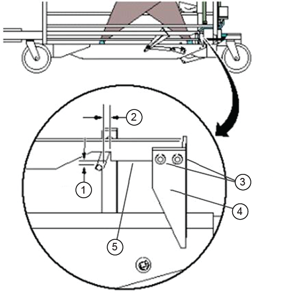
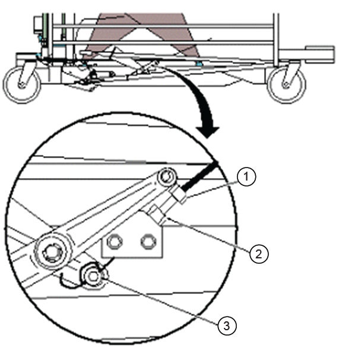

This procedure describes how to adjust the mechanical interlock, which prevents the patient table from being undocked or lowered while the cradle is in the magnet bore.
Prerequisites
Personnel requirements
Required persons
Preliminary requirements
Procedure
Finalization
1
-
15 minutes
-
Tools and test equipment
Item
Quantity
Part number
Manufacturer
Nonmagnetic Titanium Service Tool Kit
1 of either kit
5113258
-
Nonmagnetic Titanium Service Tool Kit, Large Set
5112581
-
About this task
This adjustment is for the mechanical interlock that prevents the patient table from being undocked or lowered while the cradle is in the magnet bore.
Severe injury can occur if the table is accidentally lowered during maintenance.
When doing maintenance with the table in the Up position, make sure the lock bar is safely engaged.
Lower the table lock safety bar.
Figure 1. Table lock safety bar
Lower the table and make sure that all of the table top's weight is resting on the safety bar.
With the cradle in the NOT HOME position (cradle off the flipper and in the up position), do a check of the interlock mechanisms for tolerances.
To make adjustments, do one of the following:
0.79 to 1.59 mm (1/32 to 1/16 inch) gap - Adjust the angle between the link and the flipper with set screws.
Figure 2. Cradle home/table down interlock (right side)

1
3.18 to 6.35 mm (1/8 inch to 1/4 inch) gap
2
0.79 to 1.59 mm (1/32 inch to 1/16 inch) gap
3
Set screws
4
Flipper
5
Link
3.18 to 6.35 mm (1/8 inch to 1/4 inch) gap - Loosen the lock nut and tighten or loosen the cable adjustment screw to achieve the proper gap. Tighten the lock nut.
Figure 3. Cradle home/table down interlock (left side)

1
Fine adjustment screw
2
Lock nut
3
Coarse adjustment cable clamp screw
Note The cable wraps twice through the clamp hole.
Note If the adjustment screw does not provide enough range for adjustment, coarse adjustment may be made to the cable length where the cable end is clamped into the actuator bracket. Fine adjustment will be required after doing a coarse adjustment.
Raise the table lock safety bar.
Finalization
With the cradle fully into the bore, make sure that the table down pedals do not let the table go down. Use both the table down pedal from the table and the dock. If the table does go down, do the adjustment procedures again.